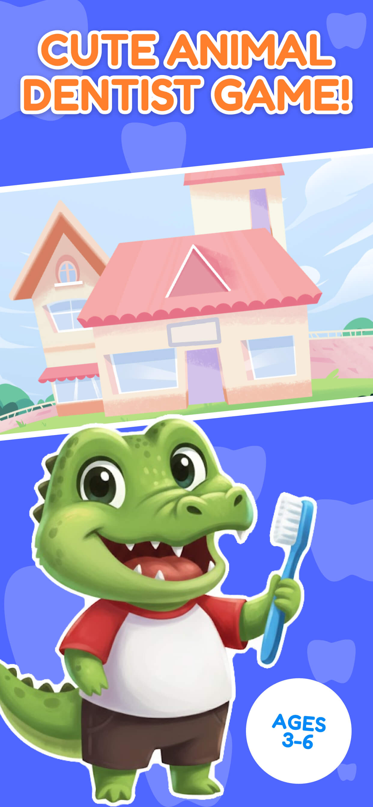
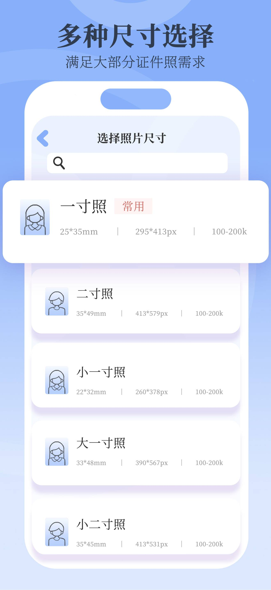
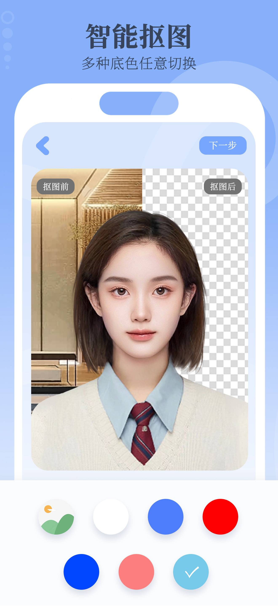
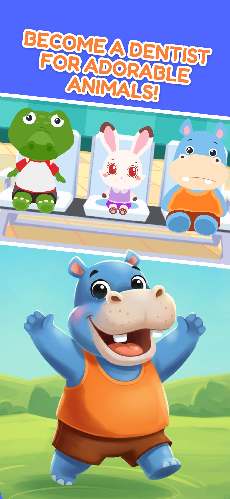

通过游戏帮助小朋友学习健康习惯！
儿童牙医游戏是一款专为3-8岁儿童设计的教育角色扮演体验。通过模拟真实的牙科诊所，儿童可以帮助可爱的动物朋友解决牙齿问题，在游戏中认识牙科工具和诊所场景。
兔子关卡清洁牙齿与补牙，河马关卡安装牙套，鳄鱼关卡体验拔牙。适合家长陪同孩子在家或旅途中进行角色扮演；游戏不提供医疗诊断或治疗建议。
在 App Store 查看 · 在 Google Play 查看
平台发布者：iOS 为泽沛 许，Google Play 为 Malt Creative。广告与数据处理说明请分别查看 iOS 隐私政策 和 Android 隐私政策（英文）。




如有任何问题、建议或需要帮助，欢迎随时与我们联系：